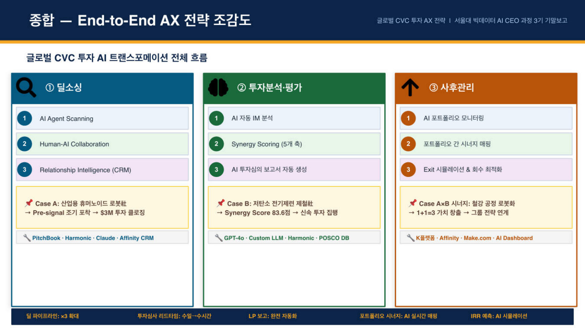

포스코기술투자는 포스코가 100% 지분을 가진 CVC(대기업이 유망 스타트업에 투자하는 벤처 투자회사)로, 운용 자산 1~2조 원에 투자한 회사만 400개가 넘는 국내 최대 규모다. 그런데 좋은 스타트업을 찾는 일(딜소싱)은 여전히 심사역 개인의 인맥과 명함에 기대는 방식이었다. 사람 네트워크에 의존하니 정보가 한쪽으로 쏠리고, 해외 소식은 시차 때문에 이미 소문난 회사에 뒤늦게 들어가게 되며, CES 같은 해외 전시회를 직접 다니자니 사람과 비용이 많이 든다. 발표자는 2019년 마이크로소프트가 제품도 없던 OpenAI에 남들보다 먼저 10억 달러를 투자해 거대한 지분을 선점한 사례를 들며, 투자에서는 남들이 모를 때 데이터로 확신을 얻어 먼저 깃발을 꽂는 것이 최고의 수익률이라고 진단했다.
투자의 세 단계인 발굴, 심사, 사후관리 전부에 AI를 붙이는 설계를 내놨다. 발굴 단계에서는 AI 에이전트가 글로벌 벤처 데이터베이스와 기술 블로그를 24시간 훑으며, 투자 유치가 공식화되기 전의 초기 신호(Pre-signal)를 감지해 알려준다. 심사 단계에서는 포스코 전용 AI에 그룹 전략을 학습시켜 다섯 가지 축(포스코 사업과의 궁합, 기술 성숙도, 국제 규제 리스크, 창업팀과 시장성, 재무성)으로 점수를 매기는 Synergy Scoring을 만들었다. 실제 투자 2건으로 검증도 했다. 미국의 휴머노이드 로봇 스타트업에는 그룹이 함께 300만 달러를 투자했는데, AI 도구였다면 창업 2개월 만에 창업팀을 포착했을 것이고 투자 심사 초안도 30분 만에 나온다는 계산이다. 저탄소 제철 스타트업은 AI 채점 결과 종합 83.6점으로 투자 권장이 나왔고, 실제 심사 결론과도 일치했다. 발표 형식부터 남달랐는데, 발표 자료를 학습시킨 AI(Notebook LM)가 만든 팟캐스트 음성이 발표의 3분의 1을 대신 진행했다.
딜 검토에 걸리는 시간이 수일에서 수시간으로 줄고, 연간 200건 이상을 걸러내며 심사 업무의 80% 이상을 자동화하는 것이 목표다. 400개 넘는 투자 회사끼리 시너지를 AI로 짝지어, 로봇 회사의 로봇을 제철 스타트업의 위험한 공정에 투입하는 식으로 1+1을 3으로 만드는 구상도 있다. 다만 결론은 AI 만능론이 아니다. 1960년대에 AI가 투자 심사를 했다면 세계 최빈국의 갯벌에 제철소를 짓겠다는 포항제철 계획은 성공 확률 0%로 탈락했을 것이다. AI가 99%의 투자 건을 걸러주더라도, 데이터가 없는 곳에 베팅하는 창업가의 똘끼와 집념을 알아보는 마지막 1%의 판단은 사람이 지켜야 한다는 것이 발표의 결론이었다.